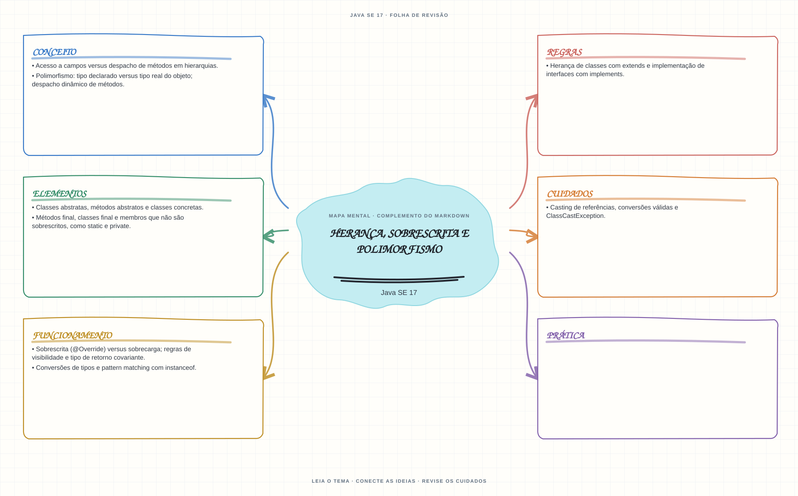

Ver mapa mental deste assuntoSeparar despacho dinâmico de métodos sobrescritos de acesso a campos definido pelo tipo declarado.
Primeiro contato: aprenda o conceito e pratique antes de consultar os detalhes de prova. Voltar aos fundamentos se algum termo ainda for novo.
- Leia o objetivo e localize a ideia principal no conteúdo abaixo.
- Preveja o resultado, compile e execute o exemplo.
- Faça a atividade sem copiar a solução e confira a checagem comentada.
EXEMPLO DE CONSOLE
Veja a regra em execução
Antes de executar, anote sua previsão. Compile o exemplo com o JDK e compare a saída observada com as regras deste assunto.
Comandos para compilar e executar
javac -d target/bin src/03-poo/heranca-sobrescrita-e-polimorfismo/HerancaSobrescritaEPolimorfismoExample.java
java -cp target/bin HerancaSobrescritaEPolimorfismoExampleA execução imprime o resultado no console para você comparar com sua previsão.
Consultar código-fonte: HerancaSobrescritaEPolimorfismoExample.java
public class HerancaSobrescritaEPolimorfismoExample {
private static class Animal {
String especie = "animal";
String emitirSom() {
return "som generico";
}
}
private static class Cachorro extends Animal {
String especie = "cachorro";
@Override
String emitirSom() {
return "latido";
}
}
private static class Gato extends Animal {
@Override
String emitirSom() {
return "miado";
}
}
public static void main(String[] args) {
System.out.println("=== Heranca, sobrescrita e polimorfismo ===");
Animal[] animais = {new Cachorro(), new Gato()};
for (Animal animal : animais) {
System.out.println("Tipo da referencia: Animal; som sobrescrito: " + animal.emitirSom());
}
Animal referencia = new Cachorro();
System.out.println("Campo usa o tipo declarado da referencia: " + referencia.especie);
System.out.println("Metodo sobrescrito usa o tipo real do objeto: " + referencia.emitirSom());
}
}
PRATIQUE AGORA
Faça uma pequena alteração por conta própria
Crie duas subclasses que sobrescrevam um método descrever; chame o método por variáveis do tipo da superclasse.
Concluído quando: o programa compilar, produzir o resultado esperado e você conseguir explicar a regra aplicada.
CHECAGEM RÁPIDA · Herança, sobrescrita e polimorfismo
Uma chamada a método sobrescrito depende do tipo declarado da referência ou da classe real do objeto?
Conferir resposta comentada
O método sobrescrito é escolhido pelo tipo real do objeto; campos não são despachados dinamicamente e dependem da referência usada.
Estude
- Herança de classes com
extendse implementação de interfaces comimplements. - Classes abstratas, métodos abstratos e classes concretas.
- Sobrescrita (
@Override) versus sobrecarga; regras de visibilidade e tipo de retorno covariante. - Métodos
final, classesfinale membros que não são sobrescritos, comostaticeprivate. - Polimorfismo: tipo declarado versus tipo real do objeto; despacho dinâmico de métodos.
- Casting de referências, conversões válidas e
ClassCastException. - Acesso a campos versus despacho de métodos em hierarquias.
- Conversões de tipos e pattern matching com
instanceof.
Prática
Trace chamadas de método e acesso a campos usando variáveis de tipos declarado e real diferentes. Justifique cada resultado.
Como este capítulo se relaciona com cada exame
POO básica é reaproveitável; records e sealed não existem em Java 8.
Base de estudo deste portal; confirme o mapeamento com o blueprint vigente.
Conceitos úteis; revise recursos de linguagem e regras de Java 21.
Orientação editorial sobre reaproveitamento do material; não representa objetivos oficiais nem garante cobertura do exame. Consulte o comparativo e as fontes da Oracle.